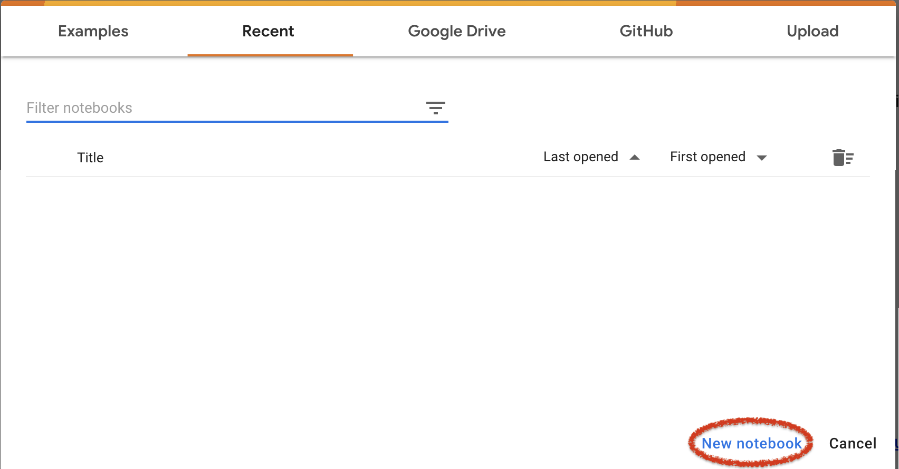

Python is a "multi-paradigm" language. It supports procedural, object-oriented and functional programming.
It has extensive libraries for scientific computing, e.g bioinformatics.
It is (mostly) platform independent.
It is easy to learn
It encourages (enforces) clean, well-structured code
Python can be (and might already be) installed on your own laptops.
But, to avoid installation hassle, we will in this course run Python on an external server, where everything is already installed.
We'll do this in a jupyter notebook environment, which means we can run Python within our web browser.
In this course, you are free to choose among these options:
After logging in, click on the Jupyter button...
Then, click the "Start DAG" button...
Then, choose "Datascience notebook with Python", and press "start"
Now, make sure to double-click on work, so that you create your notebook within the work directory (feel free to create a new subdirectory under "work" if you prefer).
Then, click on the "Python 3" button under "Notebook". Note that I created a "work/notebooks" directory to work in.
Now, you should have a notebook available to you:
If you have a Google account, you can just go to https://colab.research.google.com/:
You should now have a notebook environment:
If you press shift-enter after each line of code, Jupyter notebooks will run a line of code:
You can run multiple lines of code in the same way:
These blocks of code are called "cells"
You can have cells containing other things than code
You can switch cell type in the drop down menu:
When working with a notebook, you can be in two modes
| Shift-Enter | Execute cell, select cell below |
| Alt-Enter | Execute cell, insert new cell below |
| Ctrl-Enter | Execute selected cells |
| Ctrl-s | Save |
| Esc | Switch to Command mode |
| Tab | Code complete or indent |
| Enter | Just a normal newline |
| Enter | Switch to Edit mode |
| Up/Down | Previous/next cell |
There are many more, and you can also add your own. See the online documentation.
Markdown cells allow you to write plain text...
...but you can also add special formatting:
| Titles of different sizes |
| Text formatting |
| LaTeX math code (inline or multiline) |
| Formatted code |
| Numbered list |
And much more. See the online documentation.
You can rename a notebook by clicking on the name:
Notebooks are saved in the current directory with the extension .ipynb.
You can restart your Python session through the Kernel menu
Interrupt is useful for breaking out of long running code executations
Restart and run all is useful for rerunning with a fresh state, so that you are sure that the results are not dependent on invisible old variable values.
print("Hello, World!") and execute itI'm coding Python!Comments are notes left by the programmer that explain the code.
Comments begin with the # character and continue to the end of the line.
# square of the average of all prime numbers between 0 and 10
((2+3+5+7)/4.0)**2
Variables are labels that we assign to objects in memory.
Create an integer object and label it as 'a':
a = 2
Refer to that memory location:
print(a)
print(a * 2)
output2
4
In Python, variables do not need to be declared before being assigned a value.
When variables are assigned a new value, the label just starts referring to the new object.
a = 2
a = "hello"
print(a)
outputhello
Name your variables responsibly!
If you are using a well known formula, let's say x = a + b, then you can use 'a' and 'b' as names. Otherwise, be more descriptive:
drink_limit = 4
Three types of numbers:
Python supports the following arithmetic operators:
| + | addition | // | integer division | |
| - | subtraction | % | modulo (remainder of division) | |
| * | multiplication | ** | exponentiation | |
| / | division | - | negative (unary) |
We can compare two numeric values
x = 3
y = 4
print(x < y)
print(x > y)
print(x == y)
outputTrue
False
False
We can perform an operation on a variable and assign the result back to the same variable
The assignment operators are based on the basic arithmetic operators:
x = 4
x += 1 # same as x = x+1
x -= 2 # same as x = x-2
x *= 3 # same as x = x*3
x //= 2 # same as x = x//2
x **= 2 # same as x = x**2
x %= 5 # same as x = x%5
Can take the values of True and False
Operations: 'and', 'or', 'not'
x = 1
print((x > 0) and (x < 10))
print((x > 0) or (x < 10))
print((x > 0) and (x > 10))
outputTrue
True
False
True and True # -> True
True or True # -> True
True and False # -> FalseNote that the two columns are equivalent (for x=1). What would be the right-column equivalent for the third case?
4+6 / 2x = 4
x += 1
x -= 2
x *= 3
x //= 2
x **= 2
x %= 5
print(x)
(not (not (x > 0) or not (x < 10)))(4+6) / 2 # operator precedence: / binds stronger than +.
x = 4 # 4
x += 1 # same as x = x+1 # 5
x -= 2 # same as x = x-2 # 3
x *= 3 # same as x = x*3 # 9
x //= 2 # same as x = x/2 # 4
x **= 2 # same as x = x**2 # 16
x %= 5 # same as x = x%5 # 1
print(x)
(not (not (x > 0) or not (x < 10)))
(not ((x <= 0) or (x >= 10)))
(x > 0 and x < 10)A string is a sequence of characters. It is specified using either:
The first two are exactly the same, while the last one is for strings spanning several lines:
str1 = "Hello"
str2 = 'Hello'
str3 = '''Hello,
World!'''Operators for strings work a little differently
| + | concatenation |
| * | repetition |
| in | test if an element occurs in the string |
| [] | extract character from string (indexing) |
str1 = "Linux"
str2 = 'Python'
print(str1 + str2)
print(str1 * 10)
print('ux' in str1)output'LinuxPython'
'LinuxLinuxLinuxLinuxLinuxLinuxLinuxLinuxLinuxLinux'
True
Comparisons from strings are done based on how they would appear in a phone book (lexicographically):
| > | after |
| >= | after or equal |
| < | before |
| <= | before or equal |
print("hell" < "hello")outputTrueA string can contain combinations of characters that have a special meaning.
They start with the backslash character - \
| \n | new line |
| \t | tab |
| \' | single quote |
| \" | double quote |
| \\ | backslash |
print("1\t2\n3")output1 2
3
Often, you will want to convert values of different types to string — for instance when printing them to screen.
This can be done using:
str(value)Example:
number_of_apples = 6
print("I have " + str(number_of_apples) + " apples.")
outputI have 6 apples.
firstname with your first name, one
called lastname with your last name and one called age with your age.Name: myfirstname mylastname
Age: age
firstname = "Barack"
lastname = "Obama"
age = 61
print("Name: " + firstname + " " + lastname + "\nAge: " + str(age))outputName: Barack Obama
Age: 61The if statement is used to place a condition on a part of your code:
if condition:
code block
Example:
if 2 < 5:
print("Two is smaller than five")
output
Two is smaller than five
Note: This is the first (of many) examples where indentation is important to Python.
2 < 5 is a very simple truth expression. More complex expressions can
be created using the boolean operators and, or and not:
if x >= 30 and x <= 60:
print("value is within range")
if x < 30 or x > 60:
print("value is out of range")
if age > 70 and not profession == 'president':
retired=True
Often you will want to execute one piece of code when a condition is true,
and another if is is false. This is done using the if-else statement:
if condition:
code block
else:
alternative code block
if 2 < 5:
print("Two is smaller than five")
else:
print("Two is larger than five")
output
Two is smaller than five
Note that if and else must have the same indentation.
If you have several mutually exclusive conditions that you want to test for one at a time you can use the general if-elif-else version of the if statement:
if condition1:
code block1
elif condition2:
code block2
elif condition3:
code block3
.
.
else:
code block
Simulate a coin toss using a random number generator (RNG). We will import the module random, which implements an RNG:
import random # (explained next week)
x = random.random() # Random number between 0 and 1
if x >= 0 and x < 0.5: # Is x smaller than 0.5?
print("Heads")
elif x >= 0.5 and x < 1.0: # Otherwise, is x larger than 0.5?
print("Tails")
else:
print("Number not a probability")
output
Heads
Can we simplify this example?
Original
import random
x = random.random()
if x >= 0 and x < 0.5:
print("Heads")
elif x >= 0.5 and x < 1.0:
print("Tails")
else:
print("Number not a probability")
Simplified
import random
x = random.random() # Random number between 0 and 1
if x < 0.5: # Is x smaller than 0.5?
print("Heads")
else: # Otherwise, x must be larger than 0.5
print("Tails")
if condition1:
if condition2:
code block2
elif condition3:
code block3
else:
code block4
Example:
if x>0
if y>0:
print("upper right quadrant")
else:
print("lower right quadrant")
else:
if y>0:
print("upper left quadrant")
else:
print("lower left quadrant")
import random
# We start by multiplying with six
# so that our random number is
# between zero and six
x = random.random() * 6
if x < 1:
print(1)
elif x < 2:
print(2)
elif x < 3:
print(3)
elif x < 4:
print(4)
elif x < 5:
print(5)
else:
print(6)